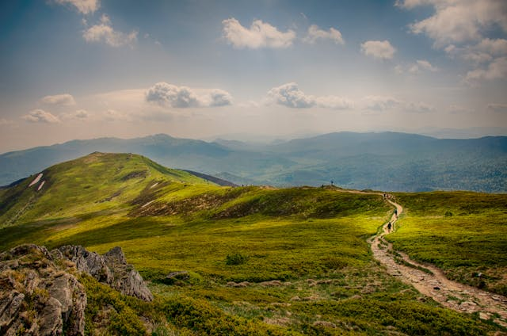

The Tall Mountain
Wind carries the scent of cedar. At a ridge, you find the Lantern, cold and unlit. It bears an inscription: "Light me for others, or carry me for yourself.
About the Mountain
- The mountain is said to be home to ancient spirits who guide worthy travelers.
- Snow still clings to the highest cliffs, sparkling like silver when sunlight hits.
- Legends say those who reach the top are granted wisdom beyond their years.
- Some believe a hidden temple rests near the peak, waiting to be found.
You climbing
- You tighten your cloak and move carefully along the rocky path.
- A sudden gust of wind nearly pushes you back, but you press on.
- You hear a distant rumble, unsure if it is thunder or something alive.
- A narrow ledge forces you to step slowly, steadying your breath.
- You reach a resting place and look up—still so far to go, yet you feel stronger.

Go to the Home Page
Go to Green Forest
Go to The Dragon
Go to The Village